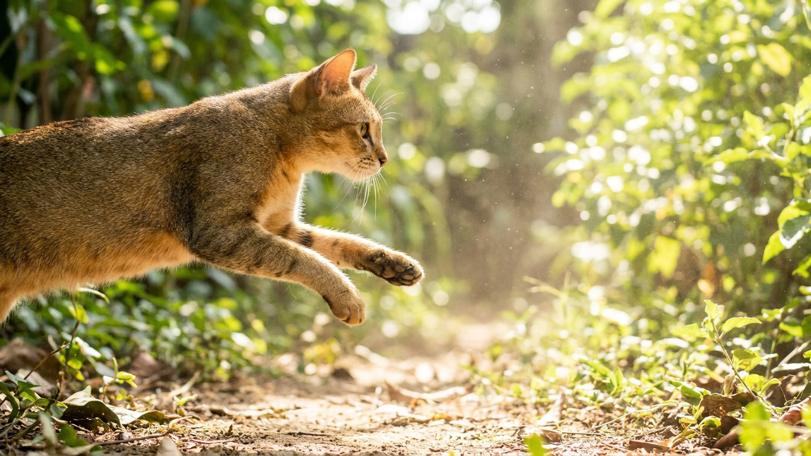

На выставке её нередко принимают за абиссинскую — похожий тикированный окрас, аккуратная мордочка. Но цейлонская кошка меньше, коренастее и по характеру совсем другая: мягче, привязчивее, без охотничьего азарта. Ниже — чем она выделяется, как устроен её уход и кому эта порода подойдёт по-настоящему.
🐾 У вас цейлонская кошка?
AnimaLife соберёт уход под породу: к каким болезням есть склонность, что проверять по возрасту, чем кормить и когда пора к врачу. Бесплатно, прямо в мессенджере.
Собрать план ухода → Собрать в MAX →
У вас iPhone? AnimaLife есть в App Store
Цейлонская кошка — средне-маленькая: вес 3–4 кг, компактное мускулистое тело. Главная особенность — тикированный «песочный» или тёплый золотистый окрас с тёмным рисунком на каждом волоске. На лбу характерный «М»-образный узор, который заводчики называют «лунными» отметинами.
Отличия от абиссинской:
Порода выведена на Шри-Ланке в 1980-х, признана FIFe. В России практически не представлена — найти заводчика сложно.
Цейлонская кошка — контактная. Она не сидит в отдалении и не наблюдает издалека: будет рядом, на коленях, проследит за каждым вашим шагом по квартире. При этом без навязчивости — если заняты, спокойно ляжет рядом.
В одиночестве переносит хуже среднего: лучше заводить двух или много бывать дома.
Шерсть без подшёрстка — главный плюс для тех, кто не хочет вычёсывать. Раз в неделю мягкая щётка, и шерсть в порядке. Линяет умеренно.
Порода считается крепкой в плане здоровья — серьёзных породоспецифичных проблем не выявлено. Плановые осмотры у ветеринара раз в год достаточны для здоровой взрослой кошки.
Цейлонская кошка хороша для:
Не подойдёт, если:
Материал носит информационный характер и не заменяет очную консультацию ветеринара.
🐾 Ваш питомец — цейлонская кошка?
Заведите профиль в AnimaLife: приложение запомнит породу, возраст и вес и будет подсказывать по уходу именно для неё. Вопросы AI-ветеринару — круглосуточно и бесплатно.
Завести профиль → Завести в MAX →
У вас iPhone? AnimaLife есть в App Store
🐾 Понравился разбор?
Подпишитесь на канал — каждый день разбираем по одному тревожному симптому у кошек и собак: что в пределах нормы, а когда пора к врачу. Подпишитесь, чтобы не пропустить разбор, который может спасти здоровье вашего питомца.